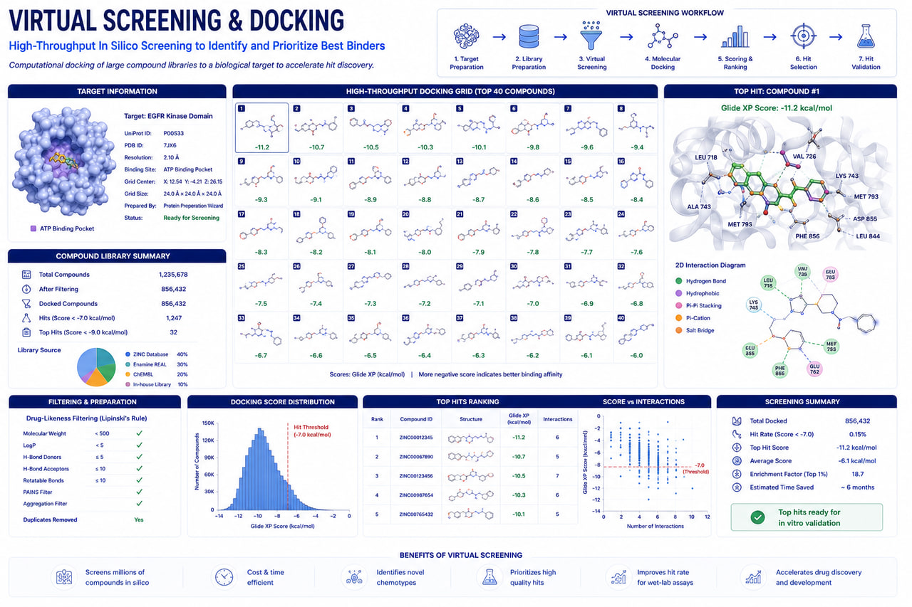

Virtual Screening & Molecular Docking
Accelerate Drug Discovery with High-Throughput Virtual Screening and Structure-Based Molecular Docking

RASA Life Science Informatics provides advanced Virtual Screening & Molecular Docking services to support pharmaceutical companies, biotechnology organizations, CROs, and academic researchers in identifying promising drug candidates against validated therapeutic targets.
Our computational drug discovery platform combines structure-based virtual screening, molecular docking, pharmacophore modeling, ligand-based screening, and AI-assisted compound prioritization to rapidly evaluate large chemical libraries and identify high-confidence candidate molecules for downstream drug development.
By integrating structural bioinformatics, computational chemistry, and machine learning-driven scoring strategies, we enable efficient identification of compounds with favorable binding affinity, molecular interactions, and drug-like properties while significantly reducing experimental screening costs and timelines.
What We Offer
Structure-Based Virtual Screening
- ✓High-throughput screening of large compound libraries
- ✓Protein-target focused screening workflows
- ✓Hit prioritization and ranking
- ✓Drug repurposing studies
Molecular Docking
- ✓Protein–ligand docking
- ✓Protein–peptide docking
- ✓Flexible ligand docking
- ✓Binding pose prediction
- ✓Binding affinity estimation
Ligand-Based Screening
- ✓Similarity-based screening
- ✓Pharmacophore modeling
- ✓Shape-based screening
- ✓Chemical space exploration
Compound Library Screening
- ✓ZINC database
- ✓ChEMBL
- ✓DrugBank
- ✓FDA-approved drug libraries
- ✓Natural product libraries
- ✓Custom client libraries
AI-Assisted Candidate Prioritization
- ✓Machine learning-based scoring
- ✓Toxicity prediction
- ✓Drug-likeness assessment
- ✓Compound ranking and clustering
Key Features
High-Throughput Screening Capability
Screen thousands to millions of compounds efficiently using scalable computational infrastructure.
Multiple Docking Engines
Support for multiple docking algorithms to improve prediction confidence and result validation.
Advanced Interaction Analysis
Comprehensive evaluation of hydrogen bonds, hydrophobic contacts, electrostatic interactions, and binding site occupancy.
Drug-Likeness & ADMET Filtering
Pre-screening and post-screening filters to improve lead quality and reduce downstream attrition.
Reproducible Workflows
Containerized pipelines using Docker, Nextflow, Snakemake, and cloud-ready infrastructure.
Deliverables
Clients receive:
Applications
Novel Drug Discovery
Identification of new chemical entities against therapeutic targets.
Drug Repurposing
Screening of approved and investigational compounds for new indications.
Fragment-Based Drug Discovery
Identification and optimization of fragment hits.
Precision Medicine Research
Target-specific therapeutic candidate identification.
Multi-Target Drug Discovery
Evaluation of compounds against multiple disease-relevant targets.
Lead Generation Programs
Generation of high-confidence candidates for molecular dynamics simulation and lead optimization studies.
Technologies & Databases
Docking & Screening Platforms
Compound Databases
ADMET & Drug-Likeness Tools
Infrastructure
Why Choose RASA?
Frequently Asked Questions
Ready to partner with a trusted bioinformatics company in India?
Get in touch with our team in Pune, India to discuss sample sizes, platform details, and custom bioinformatics pipeline configurations for your research program.
Start a Project